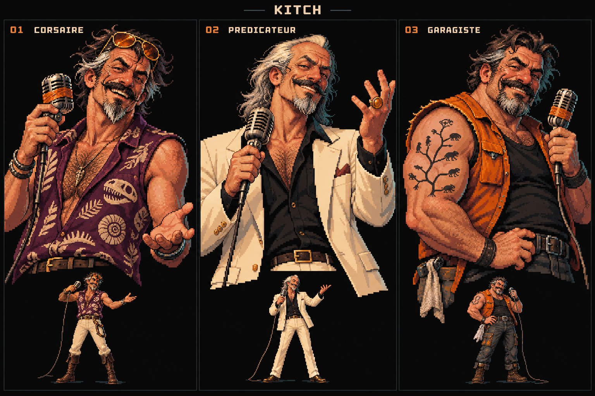
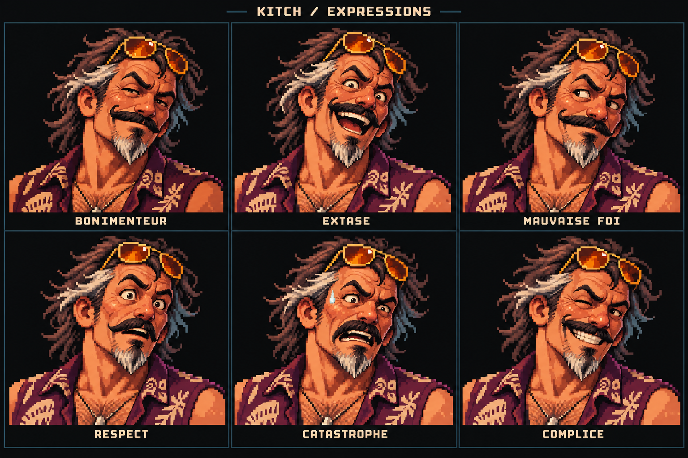
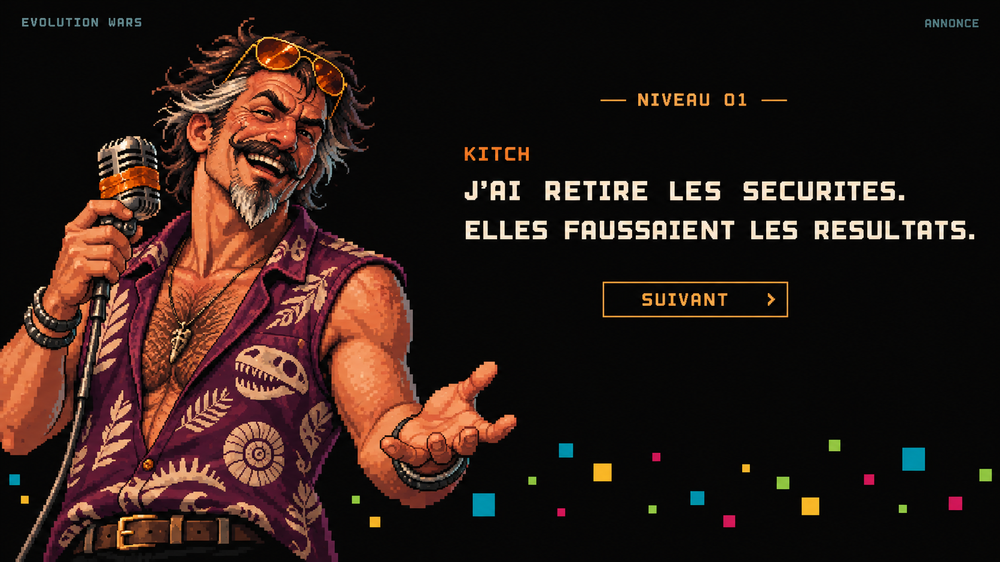
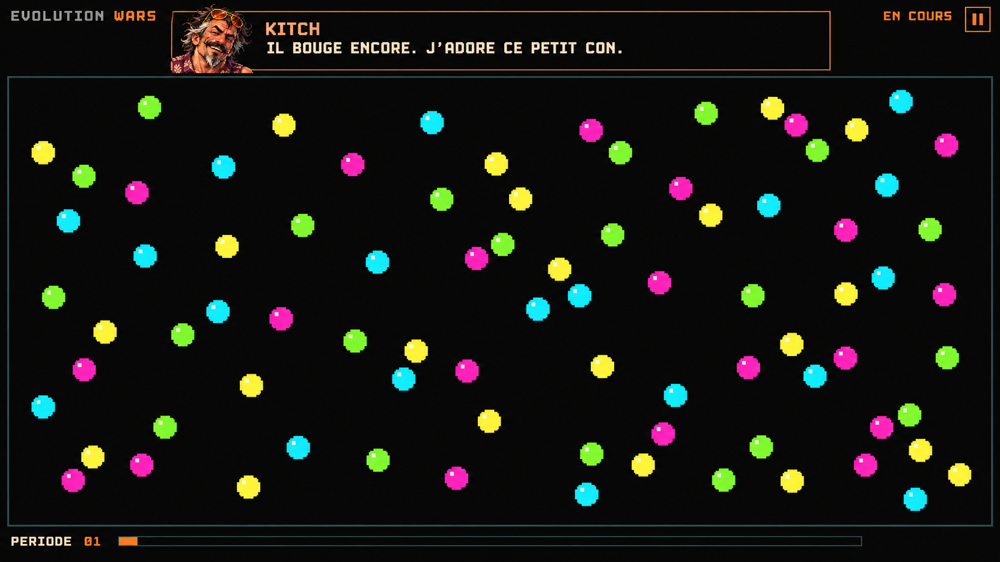

Kitch.
Le vivant a trouvé son bonimenteur.
Un aventurier de laboratoire, viril, cabossé et beaucoup trop enthousiaste. Il peut expliquer la dérive génétique tout en cherchant les lunettes qu’il porte sur le front.
Proposition de travail : humour adulte, chaleur humaine, vanité, mauvaise foi et enthousiasme contagieux. Sa compétence rend ses conseils utiles ; son ego transforme tout le reste en spectacle.
Trois silhouettes

01 / Le corsaire tropical
Peau cuite au soleil, cheveux noirs et tempes argentées, moustache épaisse, barbiche, lunettes ambrées, chemise prune à fossiles. Sec, nerveux, débraillé. Le plus mystérieux et le plus immédiatement reconnaissable.
02 / Le prédicateur
Costume crème, bague douteuse, geste théâtral. Il vend chaque nouvelle période comme une révélation. Très bon costume alternatif pour une finale ou une émission spéciale.
03 / Le garagiste du vivant
Avant-bras massifs, veste orange, arbre de l’évolution tatoué. Plus terrien et physique. Il considère qu’une extinction est probablement un problème de réglage.
Background : trois pistes
Ces histoires sont des alternatives à tester ; elles ne sont pas encore le canon du jeu.
- Le fondateur introuvable — favori. Il a fait fortune dans les machines de tri industriel. Un jour, il a décidé que le vivant constituait « le dernier grand problème de rendement ». Il prétend avoir vendu sa société pour financer ses recherches. Son ancien associé évoque une saisie. Depuis, il anime ses expériences depuis un lieu impossible à identifier.
- Le gourou qui croit à son propre numéro. Ancien vendeur de séminaires d’optimisation, il a commencé par louer des salles et dessiner des arbres évolutifs sur des nappes. Puis ses expériences ont réellement fonctionné. Il connaît maintenant très bien sa science, mais conserve les réflexes d’un bonimenteur qui veut absolument conclure sa vente.
- Le réparateur du bout du monde. On l’appelait pour remettre en marche des équipements que personne ne savait entretenir. Une machine à trier les œufs l’a rendu obsédé par la sélection. Il a construit son premier simulateur avec un ordinateur de caisse et refuse depuis d’admettre qu’il devrait changer de méthode.
Proposition de canon minimal : garder la première histoire, puis laisser les autres apparaître comme ses propres versions contradictoires. Chaque fois qu’un concurrent lui demande d’où il vient, il répond à une autre question.
Le bizarre vient de petits faits récurrents
- Il annonce toujours « à mon âge » ; personne n’obtient jamais le nombre.
- Tous ses appels montrent le même ventilateur. Il prétend pourtant changer de continent. Un cri de mouette revient exactement au même moment.
- Il conserve les rapports de sécurité pour corriger les passages qu’il juge « pessimistes » au stylo rouge.
- Il donne un prénom aux points qui l’impressionnent, puis s’indigne personnellement lorsqu’ils meurent.
- Il a refusé une grosse offre pour son émission. Le sponsor voulait réduire la taille des points pour loger son logo.
Son attachement aux concurrents se voit dans ses actes : il répare leur matériel, leur apporte à manger et reste après la fermeture pour comprendre leurs essais. Il chambre beaucoup, et supporte très bien qu’on lui rende la pareille.
Six expressions

Le changement essentiel est celui entre le sourire commercial et l’extase sincère. Quand un résultat le surprend, toute sa pose de dur disparaît pendant une seconde. Animation envisagée : bouche ouverte/fermée, clignement, sourcil relevé et six poses d’expression. Le grain des portraits reste encore dense ; prochaine passe : réduire les nuances et les petits détails avant de produire les sprites.
Maquette / annonce du niveau

Maquette / période en cours

Ces deux images fixent une intention de composition. Les points restent abstraits, très visibles et entourés de noir. La taille illustrée est volontairement généreuse ; elle devra être testée avec la densité réelle de la simulation. Les couleurs, la jauge et le numéro de période sont illustratifs : leur sens doit être repris du jeu existant lors de l’intégration. Aucune nouvelle règle de duel ou de score n’est définie ici.
Palette d’habillage proposée
Le prune signe le personnage ; l’ambre souligne les actions et sa présence. Les couleurs des points gardent leur fonction de gameplay. Contours fins, peu de surfaces, typographie lisible, aucune texture envahissante.
Sa voix
« Il bouge encore. J’adore ce petit con. »
- « J’ai retiré les sécurités. Elles faussaient les résultats. »
- « Une mauvaise idée ? Bien sûr. Je te demande si elle marche. »
- « J’avais prévu ce résultat. Dans un autre ordre. »
- « Ah. Celui-là a compris quelque chose que j’ignore. Ça m’agace. »
- « Tu peux me citer. Évite juste mon nom. »
- « Mon dernier associé appelait ça irresponsable. Il manque à personne. Enfin, il me manque un peu. »
- « Je me moque, mais ton réglage est malin. Refais-le. Je veux voir. »
Répliques courtes et concrètes. Il peut fanfaronner sur son passé ou commenter sa propre bêtise. Ses explications des règles doivent rester fiables ; les réactions de résultat devront être déclenchées par les vrais événements du jeu.
Prochaine itération proposée
Développer le corsaire avec une tête légèrement plus anguleuse et moins de détails, puis comparer deux niveaux de gros pixels à la taille réelle d’affichage. Tester ensuite l’annonce, une bouche animée et une seule réaction sur le vrai plateau. La priorité est le visage, la lisibilité des points et le rythme de présence de Kitch.